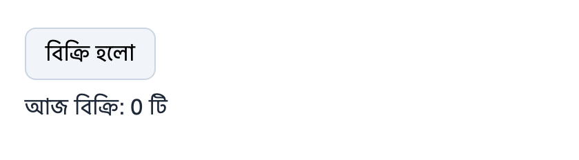
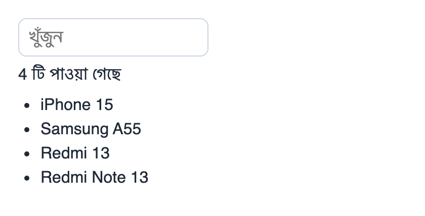
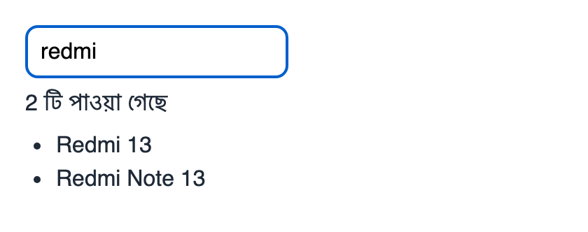
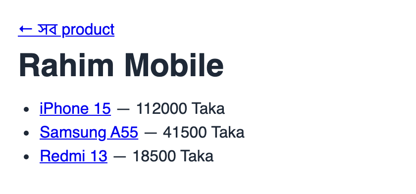
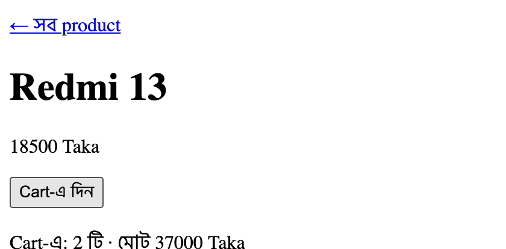

Signal আর @click: Counter
signal(cx, || 0) একটা state, .get() দিয়ে পড়া, .set() দিয়ে লেখা। @click-এর মান একটা closure। Button চাপলে signal বদলায়, আর $(sold.get()) text নিজেই আবার আঁকে — সবটা browser-এই, server-এ না গিয়ে। তিনবার চাপার পর আসল screenshot:
x-data="{ sold: 0 }" আর @click="sold++"-এর মতো — কিন্তু লেখা হচ্ছে Rust-এ, type-checked।use topcoat::{ Result, asset::{AssetBundle, RouterBuilderAssetExt}, context::Cx, router::{RouterBuilderDiscoverExt, module_router, page}, runtime::{Event, RouterBuilderRuntimeExt, signal}, view::{View, view}, }; #[tokio::main] async fn main() { let router = module_router!() .discover() .assets(AssetBundle::load().unwrap()) .runtime() .build(); topcoat::start(router).await.unwrap(); } #[page] async fn home(cx: &Cx) -> Result<impl View> { let sold = signal(cx, || 0usize); Ok(view! { <!DOCTYPE html> <html> <head>topcoat::runtime::script()</head> <body> <button @click=$(|_e| sold.set(sold.get() + 1))>"বিক্রি হলো"</button> <p>"আজ বিক্রি: " $(sold.get()) " টি"</p> </body> </html> }) }


Server আগেই HTML পাঠায়
Counter-এর page প্রথমে সাধারণ server-rendered HTML হিসেবে আসে — আজ বিক্রি: 0 টি আগে থেকেই লেখা, JavaScript চলার আগেই। আর data-topcoat-on:click attribute-এ দেখুন: আপনার Rust closure (sold.set(sold.get() + 1)) JavaScript হয়ে বসে আছে — এটাই WebAssembly-ছাড়া কৌশল।
use topcoat::{ Result, asset::{AssetBundle, RouterBuilderAssetExt}, context::Cx, router::{RouterBuilderDiscoverExt, module_router, page}, runtime::{Event, RouterBuilderRuntimeExt, signal}, view::{View, view}, }; #[tokio::main] async fn main() { let router = module_router!() .discover() .assets(AssetBundle::load().unwrap()) .runtime() .build(); topcoat::start(router).await.unwrap(); } #[page] async fn home(cx: &Cx) -> Result<impl View> { let sold = signal(cx, || 0usize); Ok(view! { <!DOCTYPE html> <html> <head>topcoat::runtime::script()</head> <body> <button @click=$(|_e| sold.set(sold.get() + 1))>"বিক্রি হলো"</button> <p>"আজ বিক্রি: " $(sold.get()) " টি"</p> </body> </html> }) }
$ curl -s http://localhost:3000/ | grep -o '<body>.*</body>'
<body><button data-topcoat-on:click="(__local0) => (cx.hydrate({"t":"Signal","id":"439dc77791af2a46d3475bfe359dd13f"})).set((cx.hydrate({"t":"Signal","id":"439dc77791af2a46d3475bfe359dd13f"})).get().add((cx.hydrate({"t":"usize","bits":64,"v":"1"}))))">বিক্রি হলো</button><p>আজ বিক্রি: <!--::topcoat::expr::start("(cx.hydrate({"t":"Signal","id":"439dc77791af2a46d3475bfe359dd13f"})).get()")-->0<!--::topcoat::expr::end--> টি</p></body>
Shard: server থেকে আবার আঁকা অংশ
Search result-এর মতো server-এর data দিয়ে বানানো অংশ বদলাতে #[shard]: একটা component যার argument ($(query.get())) বদলালে server আবার HTML বানায়, আর browser শুধু সেই অংশ জায়গা-মতো বদলে দেয়। "redmi" লিখে দেখুন:
use topcoat::{ Result, asset::{AssetBundle, RouterBuilderAssetExt}, context::Cx, router::{RouterBuilderDiscoverExt, module_router, page}, runtime::{Event, RouterBuilderRuntimeExt, signal}, view::{View, view}, }; #[tokio::main] async fn main() { let router = module_router!() .discover() .assets(AssetBundle::load().unwrap()) .runtime() .build(); topcoat::start(router).await.unwrap(); } use topcoat::runtime::shard; const PRODUCTS: [&str; 4] = ["iPhone 15", "Samsung A55", "Redmi 13", "Redmi Note 13"]; #[shard] async fn results(query: String) -> Result<impl View> { let q = query.to_lowercase(); let found: Vec<&str> = PRODUCTS.iter().copied().filter(|p| p.to_lowercase().contains(&q)).collect(); Ok(view! { <p>(found.len()) " টি পাওয়া গেছে"</p> <ul> for p in found { <li>(p)</li> } </ul> }) } #[page] async fn home(cx: &Cx) -> Result<impl View> { let query = signal(cx, String::new); Ok(view! { <!DOCTYPE html> <html> <head>topcoat::runtime::script()</head> <body> <input placeholder="খুঁজুন" @input=$(|e: Event| query.set(e.target.value))> results(query: $(query.get())) </body> </html> }) }



Mini project: Rahim Mobile
সব মিলিয়ে: #[layout], app_context থেকে product list, /products/{id} page (না পেলে 404), আর browser-এ চলা signal। নিচের screenshot-এ প্রথমে list, তারপর Redmi 13-এর page-এ দুবার "Cart-এ দিন"।
qty কমায় কিন্তু ০-র নিচে যায় না। (ইঙ্গিত: if runtime expression-এর ভিতরেও চলে)use topcoat::{ Result, asset::{AssetBundle, RouterBuilderAssetExt}, context::{Cx, app_context}, router::{ RouterBuilderDiscoverExt, Slot, error::RouterErrorExt, href, layout, module_router, page, path_param, }, runtime::{RouterBuilderRuntimeExt, signal}, view::{View, view}, }; struct Product { id: u32, name: &'static str, price: u32 } struct Catalog(Vec<Product>); path_param!(id: u32, error = bad_request); #[tokio::main] async fn main() { let catalog = Catalog(vec![ Product { id: 1, name: "iPhone 15", price: 112000 }, Product { id: 2, name: "Samsung A55", price: 41500 }, Product { id: 3, name: "Redmi 13", price: 18500 }, ]); let router = module_router!() .discover() .app_context(catalog) .assets(AssetBundle::load().unwrap()) .runtime() .build(); topcoat::start(router).await.unwrap(); } #[layout] async fn shell(slot: Slot<'_>) -> Result<impl View> { Ok(view! { <!DOCTYPE html> <html> <head><title>"Rahim Mobile"</title> topcoat::runtime::script()</head> <body> <nav><a href=(href!(home))>"← সব product"</a></nav> (slot) </body> </html> }) } #[page] async fn home(cx: &Cx) -> Result<impl View> { let catalog = app_context::<Catalog>(cx); Ok(view! { <h1>"Rahim Mobile"</h1> <ul> for p in &catalog.0 { <li><a href=(format!("/products/{}", p.id))>(p.name)</a> " — " (p.price) " Taka"</li> } </ul> }) } #[page("/products/{id}")] async fn product(cx: &Cx) -> Result<impl View> { let id = *path_param::<Id>(cx)?; let p = app_context::<Catalog>(cx).0.iter().find(|p| p.id == id).ok_or_not_found()?; let qty = signal(cx, || 0usize); let price = p.price as usize; Ok(view! { <h1>(p.name)</h1> <p>(p.price) " Taka"</p> <button @click=$(|_e| qty.set(qty.get() + 1))>"Cart-এ দিন"</button> <p>"Cart-এ: " $(qty.get()) " টি · মোট " $(qty.get() * price) " Taka"</p> }) }


